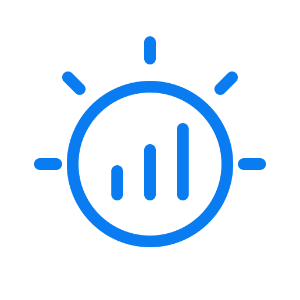
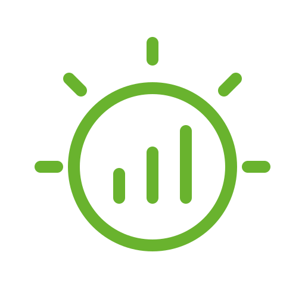

<!doctype html>
<html lang="ru">
<meta charset="utf-8">
<meta name="viewport" content="width=device-width, initial-scale=1">
<title>growattStats — логотип</title>
<style>
* { box-sizing: border-box; }
body { margin: 0; padding: 40px; background: #f5f7fa; color: #24374a; font: 15px/1.5 system-ui, sans-serif; }
main { max-width: 940px; margin: auto; }
h1 { margin: 0 0 6px; font-size: 27px; font-weight: 600; }
p { margin: 0 0 28px; color: #66778a; }
.variants { display: grid; grid-template-columns: repeat(3, 1fr); gap: 20px; }
article { padding: 24px 16px; border: 1px solid #e2e7ed; border-radius: 16px; background: #fff; text-align: center; }
h2 { margin: 0 0 20px; font-size: 15px; font-weight: 500; }
.large { width: 224px; height: 224px; margin: auto; }
.sizes { display: flex; justify-content: center; align-items: center; gap: 20px; margin-top: 24px; height: 56px; }
.inverse { background: #24374a; color: #fff; }
footer { margin-top: 24px; color: #66778a; font-size: 13px; }
@media (max-width: 760px) { .variants { grid-template-columns: 1fr; } }
</style>
<main>
  <h1>growattStats</h1>
  <p>Солнце и статистика выработки · мягкий контур в стиле cVent</p>
  <div class="variants">
    <article>
      <h2>Синий · серия компонентов</h2>
      
      <div class="sizes"></div>
    </article>
    <article>
      <h2>Зелёный · отсылка к Growatt</h2>
      
      <div class="sizes"></div>
    </article>
    <article class="inverse">
      <h2>Белый · для тёмного фона</h2>
      
      <div class="sizes"></div>
    </article>
  </div>
  <footer>Все SVG и PNG имеют прозрачный фон. Подложки есть только в этом превью.</footer>
</main>
</html>
